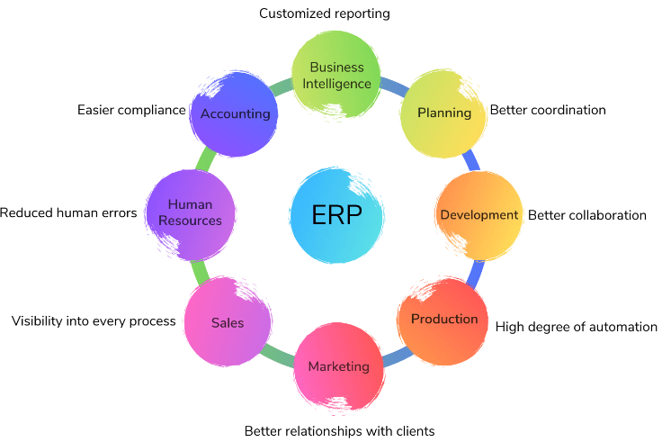
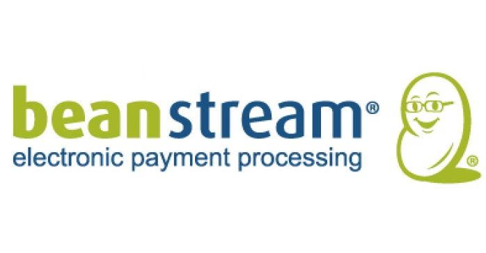
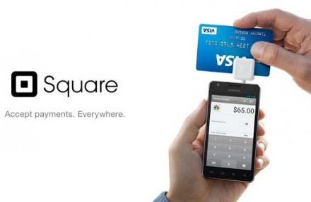
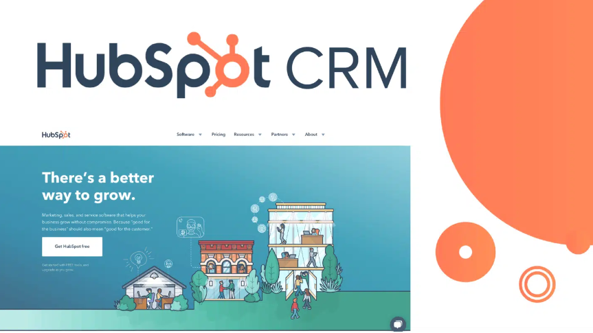

Enterprise Software
Enterprise Software is any kind of software used by a company that’s far reaching enough to be called an enterprise. These companies require specialized software that can meet their unique requirements.
With the right enterprise software a business can automate processes, increase productivity, save money and reduce mistakes. From accounting to project management to inventory and shipping, Enterprise Solutions can organize all data necessary and make it readily accessible.
Enterprise software is a term used to describe applications and technologies that companies use in order to support their operational and strategic initiatives by focusing on the whole organization rather than a single user.
Customer Relationship Management - CRM
Customer Relationship Management CRM platform focuses on gathering information from lots of sources across the business and beyond.
It manages company’s interaction with current and future customers, giving them a feeling of personal service, creating tailored content, delivering personalized messages and overall improving customer service levels.
In return the business gets insight into how customers feel and what they are saying about the business.
Since the CRM has moved to the “cloud” it has it has provided businesses with faster deployment, the ability to work from anywhere, on any device, it has increased collaborations and cost effectiveness.
In addition, CRM solutions feature lead and contact management, reporting and analytics, pipeline management, sales automation, database management.
There are a couple of CRM Solution companies such as Sage CRM, Microsoft Dynamics CRM, Zoho CRM and HubSpot CRM.
Supply Chain Management - SCM
Supply Chain Management SCM helps oversee supply chain functions, such as tracking the movement of the goods from a supplier to a customer, information flow and status of deliveries, and the financial flow.
With this software, businesses can manage sales orders more effectively, along overseeing manufacturing, materials ordering, distribution, warehouse management, order processing and supply chain analytics.
There are two main types of SCM Software planning applications with their advanced algorithms determining the best way to fill an order and execution applications with their tracking system of physical status of the goods, management of materials and financial information.
Come other features of this software include supply chain planning, demand planning, vendor managed inventory, supplier management, order fulfilment and procurement.
With this software the overall efficiency, analysis and intelligence of the operations improves and it reduces cost.
Suitable online payment solutions
There are more online payment options now than ever before, and the more online payment options you offer the more online payment processing occurs and the company will make more money.
Credit Cards are the most popular way to pay for goods and services online. For a business to set up credit card processing they would need an internet merchant account. This can be set up with the local bank or there may be a need to open up an account with a different bank.
There are also third-party merchant account providers, such as Beanstream, Moneris, PSiGate or Internet Secure. These accounts have some advantages, quick set up is one and often these accounts can be bundled up with an ecommerce service packages that include the internet gateway needed for online credit card processing. Disadvantage of these third-party accounts is that they have higher and more charges than the local banks, such as application fee, setup fee, monthly fee, statement fee etc.
With any internet merchant account an internet gateway service has to be purchases and this gateway verifies information, transfers requests and authorizes credit cards. Most common cards used are MasterCard, Visa, American Express and Discover.
Online payment solutions that do not require merchant accounts.
PayPal is a payment program that accepts mayor credit cards and bank transfers. They have no monthly fees, setup or cancellation fees, but they do charge a fee of 1.9%-2.9% per transaction on average.
Square is another payment program with its free online store where a business can list and sell items and services. Square offers ability to send and receive payments, and it also offers a credit card reader for accepting payments in person from customers. It charges a 2.75% fee on every transaction completed.
Unlike PayPal and Square, Stripe is a payment program that doesn’t redirect you to their own website. When using Stripe as a payment option, a website is given embedded payment forms and the whole transaction is done on the actual site where an item is being purchases. They charge a fee of 2.9% plus 30 cent charge on every transaction.
Checkout by Amazon provides its users with a copy-and-paste code that is placed then on the website as a purchasing option. They charge a fee of 2.9% plus 30cents per transaction and that’s for monthly sales below £3,000.
CRM Platform
HubSpot is a CRM platform with all the software integrations, and resources needed to connect marketing, sales, content management, and customer service.
- Marketing software help to grow traffic, convert more visitors and run complete inbound marketing campaign at scale.
- Sales CRM software help users get deeper insight into prospects, automate the task and close more deals faster.
- Service Hub software help you connect with customers, exceed expectations and turn them into promoters who grow your business.

Microsoft Dynamics, HubSpot, Stripe HubSpot is a dedicated customer relationship management (CRM) solution. The CRM platform consists of different tools to manage and engage with the customers. The content management, sales, marketing, and customer service tools streamline the process of customer relationship management.
- Lead generation
- Content management
- Analytics
- Customer feedback
- Social media tools
Features:
HubSpot is an affordable CRM solution for small and mid-sized businesses. The tools can make the process of customer relationship management easier for the sales and marketing personnel.